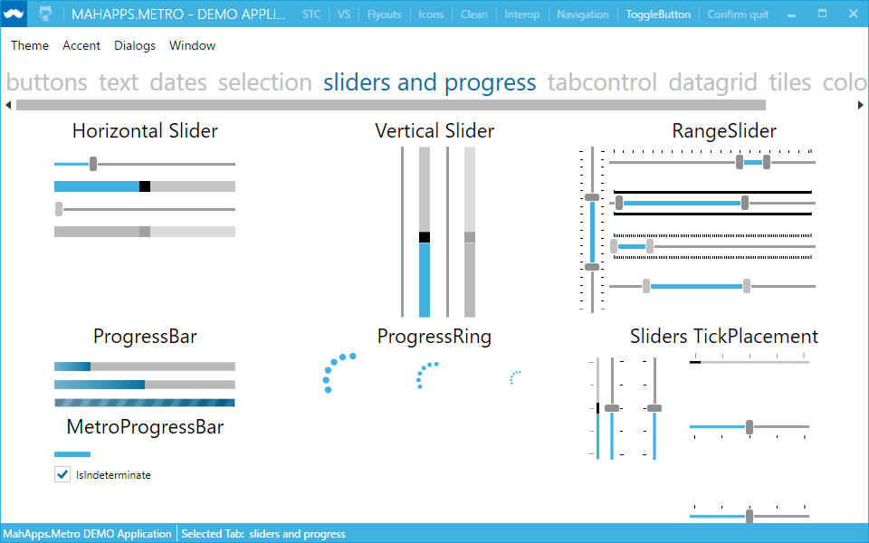

「MahApps.Metro」 は、WPF向けのUIライブラリです。
Windowsストアアプリのようなモダンな外観のコントロールをアプリ開発で利用できるようになります。
使用ライセンスは「Ms-PL」（https://msdn.microsoft.com/ja-jp/library/gg592960.aspx）です。このライセンスは、いくつかの条件を守れば、商用／非商用にかかわらず無償使用できるものです。
「MahApps.Metro」 は以下の方法で取得可能です。
下記より入手できます。
https://github.com/MahApps/MahApps.Metro
下記より入手できます。
https://www.nuget.org/packages/MahApps.Metro
サンプルプログラムをコンパイルして、デザインや動作を見てみます。
以下、一部の代表的なサンプル画面を記載します。


「Window」のサンプル中には、
・Ignore taskbar on maximize
・Toggle FullScreen (no
taskbar, window style = none)
などがあり、各種応用をすぐに行えそうです。
サンプルプログラム ダウンロード
記載： 2016年02月27日 木下英俊